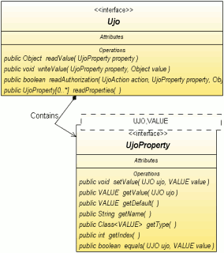

Návod pro pouití knihovny UJO Framework.
 Obsah
Obsah
Co je UJO ?

UJO Framework je Java knihovna, která poskytuje netradièní architekturu objektù
odlišnıch od JavaBeans. Pùvodní nápad vznikl jako høíèka s generickımi datovımi typy Java 5.0,
postupem èasu se však ukázalo, e architektura má nìkolik zajímavıch vlastností. Souèasná verze frameworku nabízí:
- otevøenı kód
- revoluèní architektura objektu postavená na dvou rozhraních, která zjednodušuje manipulaci objektù pomocí
sestavovacího nástroje aplikace
pøi zachování vıborné rychlosti
- vıkonná XML serializace
- CSV serializace
- Resource bundle serializace
- podpora komponenty JTable
- objekt si øídí sám dostupnost svıch atributù
- property listener
je moné implementovat na jednom místì
pro všechny property tøídy vèetnì potomkù
- podpora JavaBeans
- úspornı zdrojovı kód vašich UJO objektù
- kontrola unitovımi testy
- malá velikost frameworku bez dalších závislostí
UJO je zkratka pro Unified
Java Object a oznaèuje takovı objekt,
kterı implementuje rozhraní Ujo.
Objekt UJO si lze pøedstavit napøíklad jako mapu (objekt mapující hodnoty ke klíèùm),
ke které se pøistupuje pomocí metod klíèe. Klíè je zde tvoøen implementací rozhraní UjoProperty
obsahující (mimo jiné) dvì typovì bezpeèné metody:
Na rozdíl od metod objektu JavaBean lze tyto klíèe posílat jednoduše dalším objektùm,
pøíkladem vyuití mùe bıt seznam zobrazovanıch sloupcù tabulky poslanı do datového modelu typu TableModel,
nebo odkazy k metodám beanu na JSP stránce.
Jádrem projektu jsou tedy dvì rozhraní
Ujo a
UjoProperty,
ke kterım jsou k dispozici tøi abstraktní implementace:
- MapUjo - snadná implementace pro vıvojáøe s dostateènım vıkonem pro bìné aplikace postavená na objektu HashMap
- ArrayUjo - špièkovı vıkon objektù je srovnatelnı s rychlostí zápisu do JavaBeans, je implementovanı pomocí pole objektù
- BeanUjo - tato implementace mapuje klíèe pøímo na metody objektu JavaBean pomocí Java reflexe
Inspirací pro rozvoj tohoto projektu byla architektura perzistentních objektù v projektu Cayenne (nástroj pro øešení
ORM)
Proè ?
Proè pouívat architekturu UJO?
Objekty UJO nabízí
nìkolik zajímavıch vlastností, které je odlišují od tradièních JavaBeans objektù:
- snadná serializace
objektù do formátù XML PropertyResourceBundle
a CSV.
- architektura objektù je obecnì vhodná pro strojové zpracování atributù
objektu. Pøíkladem vyuití mùe bıt generická
implementace metod equals(), hash() a øady dalších..
- architektura umoòuje vytvoøit odkaz
na atribut UJO
(nikoli jejich hodnot) a celı seznam atributù lze pøedat do nìjaké
metody - napøíklad ve formátu UjoProperty[].
Tuto vlastnost lze vyuít napøíklad pro definici sloupcù tabulky, èi pro oznaèení sloupcù pro øazení seznamu UJO objektù.
- defaultní implementace UJO objektù jsou souèástí projektu.
- framework obsahuje pøipravenou implementaci UjoTableModel pro Swing. Pro jednoduchou vizualizaci UJO
objektù není tøeba implementovat rozhraní TableModel.
- architektura je vhodná pro stavbu dynamickıch objektù
za bìhu aplikace (zatím není implementováno)
- knihovna je velice malá (zabírá kolem 65kB) a je nezávislá na
knihovnách tøetích stran. Tuto vlastnost lze
zhodnotit napøíklad v menších aplikacích spustitelnıch Java Web Start.
- pokud oelíme nìkteré typové kontroly je moné framework
pøepsat do verze Java SE 1.4.
- èetnost vyuití metod Java reflexe je minimální a v pøípadì potøeby je moné napsat vlastní implementaci UJO objektù bez reflexe.
- pro zápis jednoho atributu postaèuje jedinı øádek zdrojového kódu, JavaBeans potøebují (pøi standardním zápisu) øádkù 7 (1 field + 3 øádky setter + 3 getter).
- krátká doba uèení, jádro projektu tvoøí pouze dva základní typy rozhraní (Interface), dále
jejich implementace a tøídu UjoManager, která poskytuje UJO objektùm sluby (nejen perzistentní ).
- funkce frameworku je pravidelnì kontrolována øadou JUnitovıch testù.
Objekt typu JavaBean oèekává implementaci
metody equals() pro kadou tøídu a implementace jsou zpravidla
rùzné pro rùzné tøídy. Na rozdíl od toho objekt UJO umoòuje implementaci této metody
pouze v rodièovské tøídì. Pokud z nìjakého dùvodu není
moné vytvoøit spoleèného rodièe, metodu equals() lze implementovat
jedním programovım øádkem spoleènım pro
všechny tøídy. Pøíklad implementace je uveden dále.
Objekty UJO jsou otevøené pro implementaci
dalších vlastností a v pøípadì potøeby lze
implementovat vlastnosti typu JavaBean,
Serizalizable
atd.
Protoe implementace byla postavena na Java™ 5.0, tak i pøíklady v dokumentu jsou demonstrovány na této verzi jazyka Java.
S urèitım omezením (ztráta typové kontroly) je však moné UJO implementovat v niších verzích jazyka Java.
Jak ?
Jak napíšeme tøídu objektu UJO?
Nejrychlejší cesta je vyuít nìjakou abstraktní implementaci UJO z tohoto projektu, pomocí pár øádù kódu však mùeme
vyrobit snadno i svoji vlastní implementaci. Pøíkladem nech
je implementace tøídy Person pomocí abstraktní tøídy MapUjo.
Kód tøídy
Jednoduché vzorové vytvoøení tøídy Person je zde:
import org.ujoframework.implementation.map.*;
public class Person extends MapUjo {
public static final MapProperty<Person,String > NAME = newProperty("Name", String.class);
public static final MapProperty<Person,Boolean> MALE = newProperty("Male", Boolean.class);
public static final MapProperty<Person,Double > CASH = newProperty("Cash", Double.class);
}
Teï, kdy máme hotovou tøídu Person mùeme vytvoøit její instanci a zapsat èi naèíst nìjaká data. Pro
zápis atributù objektu lze vyuít jednu ze dvou metod API:
- Person.writeValue(UjoProperty, Object),
nebo
- UjoProperty.setValue(person,
Object).
Z pohledu vısledku jsou obì metody ekvivalentní, nicménì druhé
øešení poskytuje typovou kontrolu pøi zápisu i ètení hodnoty.
Ukázka pouití druhého (2) pøístupu je zde:
import static org.Person.*;
Person person = new Person();
NAME.setValue(person, "Paul Ponec");
MALE.setValue(person, true);
CASH.setValue(person, 34.5);
String name = NAME.of(person);
boolean male = MALE.of(person);
double cash = CASH.of(person);
Od verze 0.80 je moné pouít rozšíøené API které nabízí èitelnìjší kód pro pøístup a attributùm
a umoòuje mimo jiné i øetìzení properties podobnì jako v jazyku Groovy. Nové API jen rozšiøuje to pùvodní a tak
je moné kombinovat oba typy objektù.
import static org.Person.*;
Person person = new Person();
person.set(NAME, "Paul Ponec");
person.set(MALE, true);
person.set(CASH, 34.5);
String name = person.get(NAME);
boolean male = person.get(MALE);
double cash = person.get(CASH);
Poznámka:
Pokud pouíváte kompilaèní parametr -Xlint:unchecked,
kompilátor vás obèas upozorní na chybìjící deklarace Generickıch datovıch typù
pøi inicializaci MapProperty. Máte tøi monosti:
- generické datové typy doplòovat i na pravou stranu vırazu podle vzoru levé èásti vırazu, nebo
- parametr -Xlint:unchecked pøi kompilaci nezapínat
- tøídu oznaèit anotací @SuppressWarnings("unchecked").
Osobnì jsem zvolil tuto monost, kód se zprùhlední
a pøípadné kolize na stejném øádku je moné snadno uhlídat.
- od verze 0.72 je pro tvorbu Property implementovaná typovì bezpeèná metoda newProperty(name, type)
Implementace metody equals()
Naše tøída Person má funkci equals() u implementovanou, protoe ji zdìdila z rodièovské tøídy MapUjo.
Pokud však z nìjakého dùvodu chcete napsat vlastní implementaci UJO s touto metodou, staèí do tøídy zapsat kód:
public boolean equals(Object obj) {
return UjoManager.getInstanceManager().equals(this, (Ujo) obj );
}
Implementace metody clone()
Podobnì jak v pøípadì metody equals mùete vytvoøit implementaci metody clone():
public Object clone() {
return UjoManager.getInstanceManager().clone(this, 1, null);
}
Implementace metody hash()
Podobnı pøíklad implementace metody hash()
:
public int hash() {
return UjoManager.getInstanceManager().getHash(this);
}
Všechny uvedené implementace jsou zpravidla vhodné i pro všechny potomky Ujo objektù.
XML serializace
Pouití serializace je velice jednoduché, kód vypadá takto:
Person person;
...
UjoManagerXML.getInstance().saveXML(writer, person, null, "My Export");
person = UjoManagerXML.getInstance().parseXML(inputStream, Person.class, "My Import");
Obsah vytvoøeného XML vypadá takto:
<?xml version="1.0" encoding="UTF-8"?>
<body>
<Name>Paul Ponec</Name>
<Male>true</Male>
<Cash>34.5</Cash>
</body>
List Property
Èasto se hodí, aby nìjakı atribut obsahoval seznam dalších UJO objektù. Je sice moné vytvoøit
atribut typu ArrayList<UjoItem>, nicménì vhodnìjší je pouít pro atribut tøídu UjoPropertyList. Prvním z dùvodù je èistší obsah exportu do XML,
protoe export neobsahuje informace o datovıch typech poloek Listu.
Pro podrobnìjší informaci doporuèuji prostudovat API.
Doporuèené øešení pro implementaci vazby 1:N pro objekty Person - Child.
public class Person extends MapUjo {
public static final MapProperty <Person,String> NAME = newProperty("Name", String.class);
public static final MapPropertyList<Person,Child> CHILDS = newPropertyList("Child", Child.class);
}
Zákaz exportu
Co kdy je tøeba exportovat jen nìkteré atributy UJO objektu a jiné ignorovat?
Pro tento pøípad slouí metoda readAuthorization(...), která mùe povolit úèast vybranıch atributù v závislosti na:
- typu akce (XML export, Resource Bundle export, ...)
- atributu
- jeho hodnotì
- a pøípadnì i na kontextu celé akce
Na následujícím pøípadì si ukáeme, jak vypadá potlaèení atributu NAME pøi exportu do XML:
public boolean readAuthorization(int action, UjoProperty property, Object value, Object context) {
switch(action) {
case ACTION_XML_EXPORT:
return property!=NAME;
default: {
return super.readAuthorization(action, property, value, context);
}
}
}
Poznámka: protoe všechny vlastnosti (Properties) UJO objektu jsou typu final, není tøeba je porovnávat metodou equals(),
ale je moné pouít rychlejší porovnání operátorem ==.
Zápis XML atributu
UJO Framework nabízí monost ukládat vybrané property jako atribut na místo XML elementu (defaultní vlastnost). K dosaení cíle vedou dvì cesty:
- implementovat vlastní øešení metody readAuthorization(...).
Pro rozlišení se vyuívá autorizaèní test pro akci ACTION_XML_ELEMENT, návratová hodnota FALSE je zpráva pro zápis XML atributu. Pøíklad pouití, ve kterém se property NAME zapisuje jako XML atribut:
@Override
public boolean readAuthorization(int action, UjoProperty property, Object value, Object context) {
switch(action) {
case ACTION_XML_ELEMENT: return property!=NAME; // the NAME will be an attribute of an element
default: return super.readAuthorization(action, property, value, context);
}
}
- pokud pouiváte nìkterého abstraktního rodièe (MapUjo, ArrayUjo), je moné oznaèit property pøímo anotací @XmlAttribute podle vzoru:
@XmlAttribute
public static final MapProperty<Ujo,String> NAME = newProperty("Name", String.class);
Vıchozí implementace metody readAuthorization(...) v rodièovské tøídì rozpoznává pøiøazenou anotaci
a tak mechanismus stále funguje vıše popsanım zpùsobem.
Jak vytvoøit JavaBean?
Z UJO objektu snadno vyrobíte JavaBean, staèí implementovat setter a getter pro kadı atribut. Pøíklad pouití:
import org.ujoframework.implementation.map.*;
public class Person extends MapUjo {
public static final MapProperty<Person,String> NAME = newProperty("Name", String.class);
public static final MapProperty<Person,Double> CASH = newProperty("Cash", Double.class);
public void setName(String name) {
NAME.setValue(this, name);
}
public String getName() {
return NAME.getValue(this);
}
public void setCash(Integer cash) {
CASH.setValue(this, cash);
}
public Integer getCash() {
return CASH.getValue(this);
}
}
Od verze Ujo Framework 0.74 je pro snadnou implementaci UJO do objektù JavaBeans pøipravena tøída BeanUjo.
Podpora komponenty JTable
UJO Framework obsahuje podporu pro zobrazování seznamu (List) UJO objektù v tabulce JTable.
Pro vytvoøení jednoduché editovatelné tabulky není tøeba vytváøet ádnou novou tøídu, staèí pouze vytvoøit instanci tøídy UjoTableModel
a tu pak vloit do objektu JTable metodou setModel().
Pøíklad jednoduchého pouití následuje:
UjoTableModel<Person> model = new UjoTableModel(Person.NAME, Person.MALE, Person.BIRTH);
jTable.setModel(model);
List<Person> persons = new ArrayList();
model.setRows(persons);
Další monosti tøídy UjoTableModel:
model.addRow(new Person());
model.setValueAt("Prokop", 0, Person.NAME );
Person person = model.getRowLast();
model.sort(true, Person.NAME);
Srovnání s AbstractTableModel
Pro vytvoøení datového modelu editovatelné tabulky je tøeba implementovat èi pøepsat (overwrite)
nìkolik metod abstraktní tøídy AbstractTableModel.
- getColumnName(int column)
- getColumnClass(int column)
- getColumnCount()
- getRowCount()
- getValueAt(int rowIndex, int columnIndex)
- setValueAt(Object value, int rowIndex, int columnIndex)
Všechny tyto metody ve tøídì UjoTableModel dostanete u implementované.
Jméno sloupce a odpovídající tøída se berou z pøímo objektu UjoProperty, seznam sloupcù se vkládá v konstruktoru.
Jak na rozšíøení?
Pokud potøebujete vyrobit potomka tøídy Person, staèí v potomkovi
definovat pouze nové atributy. Pøi prvním volání metody
readProperties() se seznam UjoProperty[]
získá pomocí Java reflexe, všechny ostatní hodnoty se u berou z cache.
public class PersonExt extends Person {
public static final MapProperty<PersonExt,Float> WEIGHT = new MapProperty("Weight", Float.class);
public static final MapProperty<PersonExt,Date> BORN = new MapProperty("Born" , Date.class);
}
Rychlost zpracování UJO objektù je závislá na implementaci. Pøi
zpracování objektu typu MapUjo
je rychlost (zápis/ètení) pøiblinì shodná s operacemi zápis/ètení objektu HashMap. Rychlejší implementaci poskytuje
øešení ArrayUjo, nejrychlejší je objekt JavaBean.
Vısledky jednoduchého mìøení jsou uvedeny v následující tabulce.
Prostøedí Windows XP, procesor Intel DuoCore 1.66 MHz, JRE 1.6.0_04, UJO Framework 0.74 .
Popis testu:
- poèet iterací testu je 5 milionù
- v kadé iteraci se vytvoøí nová instance UJO objektu,
- zapíšou se hodnoty 10-ti atributù,
- všechny hodnoty se pøeètou,
- objekt se uvolní pro Garbage collector a
- zveøejnìné vısledky jsou aritmetickım prùmìrem hodnot ze ètyø pokusù
| Implementace |
Rychlost
[sec / za 5M cyklù] |
Pomìr
[%]
|
| ArrayUjo |
2,000 |
183 |
| MapUjo |
7,032 |
643 |
| BeanUjo |
20,250 |
1851 |
| JavaBean |
1,094 |
100 |
Z tabulky je zøejmé, e rychlost implementace ArrayUjo a blíí se rychlosti JavaBeans objektù.
Vısledky mùe ovlivnit v nìkterıch pøípadech reie spojená s vytváøením instancí hodnoty atributù.
Rychlost pøístupu JavaBeans se však vıraznì sníí v pøípadì, e objektùm JavaBeans budeme pøistupovat
pøes nástroje Java reflexe, hodnoty pak budou odpovídat èasu BeanUjo.
Serializace UJO objektù z XML je postavena na rychlém SAX parseru, rychlostní testy jsou velice pøíznivé
zejména ve srovnání s rychlostí XML serializace (XMLEncoder, XMLDecoder) implementované v JRE.
Mìøení bylo provedeno za stejnıch podmínek jako minulı test (UJO verze 0.74), vısledky jsou opìt v tabulce.
Popis testu:
- všechny business objekty jsou stejného typu (v rámci jednoho testu)
- kadı business objekt obsahuje 11 atributù vèetnì jednoho rekurzivního typu ArrayList
- celkovı poèet instancí business objektu 6000
- maximální hloubka zanoøení 4 levels
- test byl proveden tøídou XmlSpeedTest2 (druhı prùchod) ze skupiny JUnit testù
- zveøejnìné vısledky jsou aritmetickım prùmìrem hodnot ze ètyø pokusù
| Implementace |
Rychlost serializace
[sec] |
Rychlost deserializace
[sec] |
Pomìr celkem
[%] |
| ArrayUjo |
0,343 |
0,500 |
18,5 |
| MapUjo |
0,344 |
0,531 |
19,2 |
| BeanUjo |
0,383 |
0,516 |
19,7 |
| JavaBean |
3,832 |
1,726 |
100,0 |
| JAXB 2.1 |
0,203 |
0,484 |
15,1 |
Závìr: XML perzistence implementovaná v UJO Frameworku je více ne pìtkrát rychlejší ve srovnání s XML perzistencí implementovanou v JRE 6.0.
Vısledky také napovídají, e rychlost zápisu UJO objektù je ve srovnání ostatními úkoly serializace málo vıznamná.
Jak?
Jaké jsou další monosti vyuití ?
Perzistence
- Celou hierarchii UJO objektù lze uloit ve formátu XML pomocí tøídy UjoManagerXML. Pro další informaci viz tøídu UjoXml .
- UJO objekt lze ukládat ve formátu PropertyResourceBundle.
- UJO objekt bude moné v nìkteré další verzi ukládat ve formátu CSV.
- Pouití UJO objektù ve frameworku Cayenne (nástroj
pro øešení ORM).
Cayenne pracuje s perzistentními tøídami podobnì, jako implementace MapUjo. Protoe
perzistentní objekty se tvoøí pomocí šablony, lze šablonu snadno upravit tak, aby implementovala rozhraní Ujo.
Servlet
Vyuití UJO v servletech zatím není podrobnì popsáné, nicménì základní myšlenka pro zpracování textovıch parametrù objektu ServletRequest je asi tato:
ServletRequest request;
UjoTextable person;
UjoProperty personName;
...
person.writeValueString(personName, request.getParameters(personName.getName());
Referenèní aplikace
Referenèní implementací je Swingovı projekt jWorkSheet, kterı vytvoøil autor UJO Frameworku a kterı je zveøejnìn pod
otevøenou licencí na domovské stránce http://jworksheet.ponec.net/.
Aplikace jWorkSheet slouí k mìøení vašeho èasu stráveného na projektech.
Na zdrojovıch kódech lze studovat vyuití perzistence UJO objektù
stejnì tak jako snadné propojení kolekce UJO objektù s grafickou komponentou JTable.
Vlastnosti aplikace jWorkSheet:
- veškerá persistence je realizovaná pomocí frameworku UJO. V projektu se pouívá ukládání do formátu XML, parametry se
ukládají do formátu Resource Bundle.
- všechny datové modely objektu JTable jsou buï pøímo instancí, nebo potomkem UjoTable .
- zajímavá je malá velikost aplikace jWorkSheet, zabírá pøiblinì 170 kB vèetnì knihovny UJO.
Projekt JWorkSheet je napsanı v Java 5.0, vıvoj byl realizován v NetBeans IDE .
Kde?
Domovská stránka projektu: http://ujoframework.org/
Referenèní implementace: http://jworksheet.ponec.net/.
Další implementnace: (zde mùe bıt odkaz i na váš projekt).
Licence
Kód byl uvolnìn pod licencí Apache License, Version 2.0.
Copyright 2007 Pavel Ponec
Licensed under the Apache License, Version 2.0 (the "License");
you may not use this file except in compliance with the License.
You may obtain a copy of the License at
http://www.apache.org/licenses/LICENSE-2.0
Unless required by applicable law or agreed to in writing, software
distributed under the License is distributed on an "AS IS" BASIS,
WITHOUT WARRANTIES OR CONDITIONS OF ANY KIND, either express or implied.
See the License for the specific language governing permissions and
limitations under the License.
FAQ
- Q: Seznam objektù Properties je seøazenı?
- A: Záleí to na implementaci.
Tøída ArrayUjo vrací seznam seøazenı vdy.
Tøída MapUjo vrací Properties zpravidla v poøadí ve kterém jsou zapsány ve zdrojovém kódu.
Protoe však metoda Java reflexe toto poøadí negarantuje, tak v pøípadì,
e je chybné poøadí properties mùe bıt kritické je doporuèeno nìjaké øešení na principu ArrayUjo.
- Q: Jakı bude vısledek pøi ètení hodnot UJO, které nebyly dosud iniciované?
- A: vısledek je závislı na implementaci UJO objektu
- B: Vıchozí implementaci (SuperUjo) vrací defaultní hodnotu z UjoProperty.
- Q: Je moné nìjak vyèistit Properties cache?
- A: Ano, metodou ve tøídì UjoManager.
- Q: Jak lokalizovat názvy properties?
- A: Názvy properties lze pouít jako klíè pro vyledání v objektu typu java.util.ResourceBundle
- Q: Jsou nìkde další pøíklady pouití UJO?
- A: Další pøíklady najdete kromì aplikace JWorkSheet i v JUnitovıch testech UJO Frameworku.
- Q: Není zpracování UJO pomalé?
- A: Implementace je velice rychlá, viz kapitola Vıkon.
Seznam zmìn
- 2008/06 - Verze 0.80 pøichází s rozhraním UjoExt
- 2007/10 - První veøejná verze 0.70 je uvolnìna pod licencí Apache License, Version 2.0.
Podrobìjœí informace jsou ve zmìnovém listu, kterı je dostuplnı v textovém formátu.